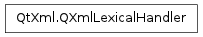

QXmlLexicalHandler ¶

Detailed Description ¶
The PySide.QtXml.QXmlLexicalHandler class provides an interface to report the lexical content of XML data.
The events in the lexical handler apply to the entire document, not just to the document element, and all lexical handler events appear between the content handler’s startDocument and endDocument events.
You can set the lexical handler with QXmlReader.setLexicalHandler() .
This interface’s design is based on the SAX2 extension LexicalHandler.
The interface provides the PySide.QtXml.QXmlLexicalHandler.startDTD() , PySide.QtXml.QXmlLexicalHandler.endDTD() , PySide.QtXml.QXmlLexicalHandler.startEntity() , PySide.QtXml.QXmlLexicalHandler.endEntity() , PySide.QtXml.QXmlLexicalHandler.startCDATA() , PySide.QtXml.QXmlLexicalHandler.endCDATA() and PySide.QtXml.QXmlLexicalHandler.comment() functions.
- class PySide.QtXml. QXmlLexicalHandler ¶
- PySide.QtXml.QXmlLexicalHandler. comment ( ch ) ¶
-
Parameters: ch – unicode Return type: PySide.QtCore.bool The reader calls this function to report an XML comment anywhere in the document. It reports the text of the comment in ch .
If this function returns false the reader stops parsing and reports an error. The reader uses the function PySide.QtXml.QXmlLexicalHandler.errorString() to get the error message.
- PySide.QtXml.QXmlLexicalHandler. endCDATA ( ) ¶
-
Return type: PySide.QtCore.bool The reader calls this function to report the end of a CDATA section.
If this function returns false the reader stops parsing and reports an error. The reader uses the function PySide.QtXml.QXmlLexicalHandler.errorString() to get the error message.
- PySide.QtXml.QXmlLexicalHandler. endDTD ( ) ¶
-
Return type: PySide.QtCore.bool The reader calls this function to report the end of a DTD declaration, if any.
If this function returns false the reader stops parsing and reports an error. The reader uses the function PySide.QtXml.QXmlLexicalHandler.errorString() to get the error message.
- PySide.QtXml.QXmlLexicalHandler. endEntity ( name ) ¶
-
Parameters: name – unicode Return type: PySide.QtCore.bool The reader calls this function to report the end of an entity called name .
For every PySide.QtXml.QXmlLexicalHandler.startEntity() call, there is a corresponding PySide.QtXml.QXmlLexicalHandler.endEntity() call. The calls to PySide.QtXml.QXmlLexicalHandler.startEntity() and PySide.QtXml.QXmlLexicalHandler.endEntity() are properly nested.
If this function returns false the reader stops parsing and reports an error. The reader uses the function PySide.QtXml.QXmlLexicalHandler.errorString() to get the error message.
See also
PySide.QtXml.QXmlLexicalHandler.startEntity() QXmlContentHandler.skippedEntity() QXmlSimpleReader.setFeature()
- PySide.QtXml.QXmlLexicalHandler. errorString ( ) ¶
-
Return type: unicode The reader calls this function to get an error string if any of the handler functions returns false.
- PySide.QtXml.QXmlLexicalHandler. startCDATA ( ) ¶
-
Return type: PySide.QtCore.bool The reader calls this function to report the start of a CDATA section. The content of the CDATA section is reported through the QXmlContentHandler.characters() function. This function is intended only to report the boundary.
If this function returns false the reader stops parsing and reports an error. The reader uses the function PySide.QtXml.QXmlLexicalHandler.errorString() to get the error message.
- PySide.QtXml.QXmlLexicalHandler. startDTD ( name , publicId , systemId ) ¶
-
Parameters: - name – unicode
- publicId – unicode
- systemId – unicode
Return type: PySide.QtCore.bool
The reader calls this function to report the start of a DTD declaration, if any. It reports the name of the document type in name , the public identifier in publicId and the system identifier in systemId .
If the public identifier is missing, publicId is set to an empty string. If the system identifier is missing, systemId is set to an empty string. Note that it is not valid XML to have a public identifier but no system identifier; in such cases a parse error will occur.
All declarations reported through PySide.QtXml.QXmlDTDHandler or PySide.QtXml.QXmlDeclHandler appear between the PySide.QtXml.QXmlLexicalHandler.startDTD() and PySide.QtXml.QXmlLexicalHandler.endDTD() calls.
If this function returns false the reader stops parsing and reports an error. The reader uses the function PySide.QtXml.QXmlLexicalHandler.errorString() to get the error message.
- PySide.QtXml.QXmlLexicalHandler. startEntity ( name ) ¶
-
Parameters: name – unicode Return type: PySide.QtCore.bool The reader calls this function to report the start of an entity called name .
Note that if the entity is unknown, the reader reports it through QXmlContentHandler.skippedEntity() and not through this function.
If this function returns false the reader stops parsing and reports an error. The reader uses the function PySide.QtXml.QXmlLexicalHandler.errorString() to get the error message.
See also
PySide.QtXml.QXmlLexicalHandler.endEntity() QXmlSimpleReader.setFeature()